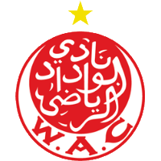
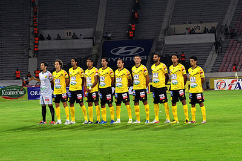

Top 6 Champions |
|||||
|  | |||||
19 |
12 |
11 |
4 |
4 |
2 |
Le Wydad Athletic Club est un club professionnel marocain omnisports, basé à Casablanca. Vainqueur de très nombreux titres nationaux et internationaux, il a reçu de la Fédération internationale de football association (FIFA) le titre honorifique de Club du siècle au Maroc. Fondé le 8 mai 1937 par Mohamed Benjelloun Touimi, il est le club le plus titré du Maroc avec 38 titres. Il possède le plus grand nombre de titres sur le plan national avec 28 titres, et également le plus grand nombre de titres sur le plan international avec 10 titres. Le Wydad est recordman de titres en Botola avec 18 sacres. Il est le seul club marocain à avoir remporté la Coupe de l'Indépendance et la Coupe internationale Mohamed-V.

Le Raja Club Athletic ou Raja de Casablanca est un club marocain de football fondé le 20 mars 1949 à Casablanca. Créé le 20 mars 1949 par des syndicats marocains, le Raja Club Athletic de Casablanca est un club marocain connu surtout pour sa section de football évoluant dans la Botola Maroc Telecom d’élite (GNF1). Il joue ses rencontres au Stade Mohammed-V. C'est l’équipe la plus populaire au Maroc, grâce à son jeu spectaculaire inspiré du style brésilien. Il fait partie des deux clubs, avec son rival le Wydad AC, à n'avoir jamais quitté le Championnat du Maroc depuis sa création en 1956. Le Raja de Casablanca dont la mascotte est l’aigle, est le premier club arabe à atteindre la finale de la Coupe du monde des clubs en 2013, il est aussi le plus titré au niveau maghrébin en compétition africaine (reconnues par la FIFA). Il fait aussi partie des clubs les plus prestigieux du continent, en 1999, lors d'un classement établi par la fédération internationale de football association, le Raja est classé 10e club au monde. Selon un classement par la CAF regroupant les meilleurs clubs africains du xxe siècle, le Raja tomba à la 3e place en Afrique après Zamalek SC et Al Ahly SC, sachant que le Raja n'a été créé qu'au milieu de ce siècle.
La section « football » de l'Association sportive des Forces armées royales (AS FAR) est à l'origine de ce club omnisports basé à Rabat, au Maroc. Son existence remonte à 1958. L'AS FAR, dans le domaine footballistique, détient le plus grand nombre de titres : 12 titres du Championnat du Maroc de football (Botola), 11 Coupes du trône, 4 Supercoupe du Maroc, une Ligue des champions de la CAF et une Coupe de la confédération. Sur le plan continental, l'AS FAR est le premier club marocain à avoir participé à une coupe africaine ; c'était en 1968, quand elle a atteint le stade des demi-finales de la Coupe d'Afrique des clubs champions. Elle a aussi été le premier club marocain à remporter la Ligue des champions de la CAF, en 1985.

Le Maghreb Association sportive de Fès est un club omnisports marocain fondé en 1946 par plusieurs nationalistes, en particulier Driss Benzakour.
Le KAC de Kénitra est un club marocain de football basé à Kénitra, fondé en 1938 et évoluant actuellement en deuxième division du championnat marocain.

e club Hassania Union Sport Agadir (HUSA) est créé en 1946 sur une impulsion patriotique de quelques mordus du ballon rond ayant eu vœu de former une équipe de football composée de musulmans uniquement. Son nom est un hommage au père fondateur et premier sponsor du club feu Haj Driss Lahlou dont le prénom de sa fille Hassania fut choisi par les autres membres fondateurs du club. Les membres de l'équipe aménagèrent un terrain d'entraînement de fortune à l'extérieur d'Agadir (terrain de Mercala), ils prirent en charge aussi bien leur équipement que tous les frais afférents aux rencontres qu'ils disputaient aussi bien localement qu'à l'extérieur de leur ville. Le HUSA disputa son premier match à l'extérieur à Salé. À son retour à Agadir, l'équipe fut accusé par la police coloniale d'activisme politique illicite. Deux titulaires et le vice-président Bijaouane périrent lors du séisme de 19602. Le HUSA retrouva sa place au sein de la première division puis continua son évolution normalement jusqu'à atteindre un niveau très appréciable lors des années 1990. En effet, le club disputa la demi-finale de la Coupe du Trône au titre de la saison 1998/1999 et fut classé 5e du championnat lors de la saison 1999/2000. Il disputa aussi la demi-finale de la coupe du Trône lors de la saison 2000/2001 et remporta le Championnat du Maroc de football 2 fois, en 2001-2002 et 2002-2003.